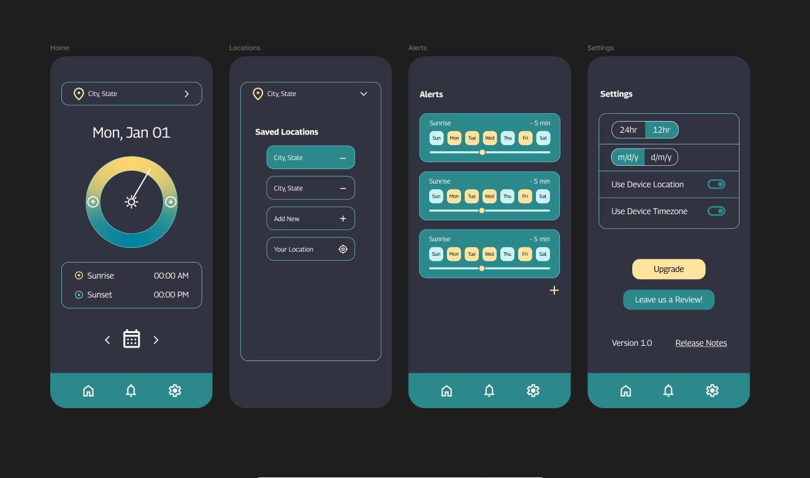

Mila Brooks - Game Developer Portfolio
Game Dev • Artist • Programmer
GAME PROJECTS UX CASE STUDIES ARTIST PORTFOLIO ABOUT RESUME

Sun App
(October 2025 - present)
- Project Type: 2 Person Team
- Role: Design, Frontend Dev
- Tools: Figma
The goal of our sun tracking app is to allow users to regulate their circadian rhythms and improve their sleep by. The app does this by providing information like sunrise and sunset times for a specific day and location, and letting users set customized notifications for various solar events.
Components :
- UX Research: performed an audit of competition, reviewing several aspects of various similar apps
- UX Define: created user stories and goal statements
- UX Design: made wireframes, lo fi mockups, and high fidelity prototypes in Figma
